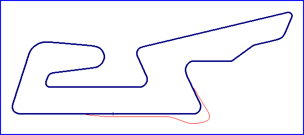

| Length | 2.300 Miles // 3.702 km | ||||||
| Direction | Clockwise | ||||||
Contact Information |
|||||||
| Address | - The circuit is under construction - |
||||||
| Telephone | +34 980 671670 | ||||||
| Website | http://www.publisan.com/circuitodecerezal | ||||||
|
|||||||
Cerezal
Proposed Circuit

| Length | 2.300 Miles // 3.702 km | ||||||
| Direction | Clockwise | ||||||
Contact Information |
|||||||
| Address | - The circuit is under construction - |
||||||
| Telephone | +34 980 671670 | ||||||
| Website | http://www.publisan.com/circuitodecerezal | ||||||
|
|||||||
racingcircuits.net - Lasted Updated: 31 July 2004 21:47:47 GMT Daylight Time
Data
Sources
Website - "Circuito de Cerezal" by Circuito de Cerezal, S.L
; http://www.publisan.com/circuitodecerezal
Forum Post - by "leprosus" on Monday, July 19, 2004 - 03:42 pm